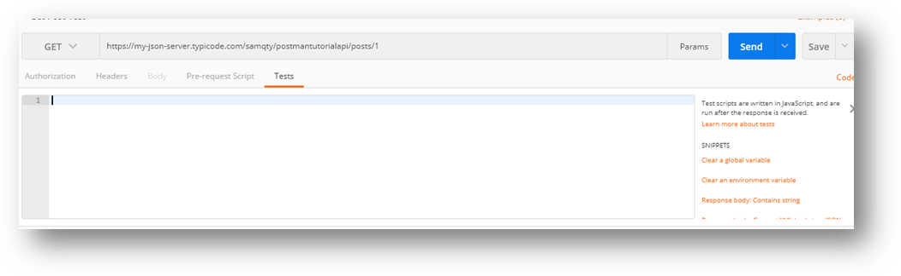
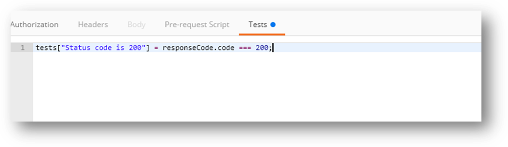
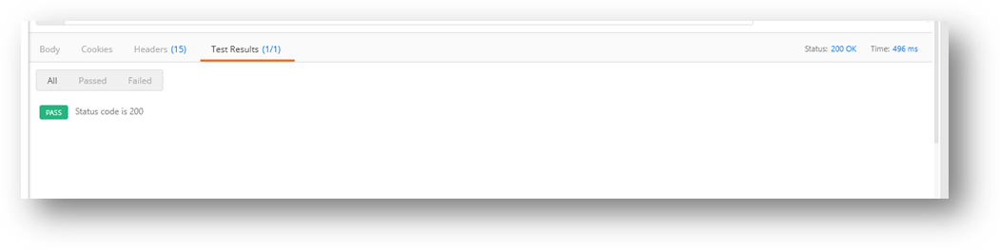
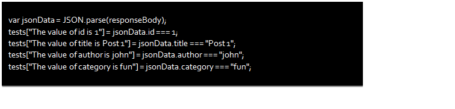
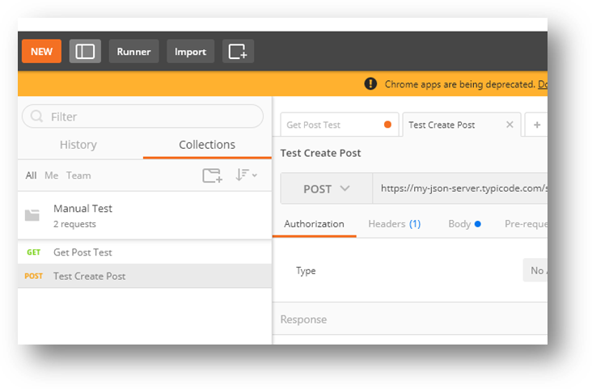

Now off to the fun part …
So far you have seen how easy it was to issue all kinds of http web API requests to our server. And you can visually see the response from these requests and make sure everything is 200 (http OK 😊). But you would normally want to automate the testing and be a little more explicit in our expectation. Post man allows us to script out tests using javascript.
- Let’s start by adding tests to our get request in the previous section. Start by opening the “Get Post Test” request we created earlier and click on the “Tests” tab under the address

- On the left side of this work space there is some documentation on how to write scripts and sample snippets (you can experiment with that and get exactly what you are trying to test). Let’s start by adding the simplest test we can do, making sure we get an OK response

- Now click on the “Send” button to run the test and see the result. You should see a result as below. Voulah!!! You have just run your first test and the result is a PASS.

- Let’s add more tests to our suit, and make things interesting, lets add some testing on the content of the data that is returned

- Click on send and make sure all the tests pass
- Now go ahead and create a new request to test http status codes, paste this URL in the address bar of the new request : https://my-json-server.typicode.com/samqty/postmantutorialapi/posts/-1 and save the request as “Invalid Post Get Request” and add it to the manual test collection
- Add a test to verify that this responds with a not found status code by adding this to the test code:

- Click on send make sure the test passes